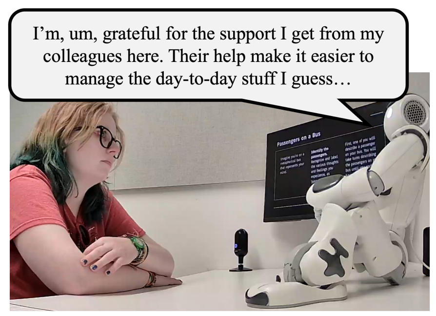

Robots as Social Agents: Examining How Factors such as Robot Personality, Customizability, and Autonomy can Influence Human-Robot Interactions

We consider devices such as calculators and microwaves to be "machines" and to not consider them as a "social other". However, social robots engage with people in human-like ways, leading people to perceive them more similar to how we view people and animals - as social agents or "social others". Therefore, robots seem to exist somewhere in between a machine and a human - we believe they can have goals and intentions, however, we do not believe that they can feel love or pain. Our work has explored how giving robots different amounts and types of expression of different attributes (e.g., personality - as shown on the left with a robot high in the neuroticism trait) can influence human-robot interaction. We have also sought to better characterize how people perceive robots as "social others", especially with respect to their perceived autonomy.
Selected Publications
Zhang, A. W., Kovacs, C., de Pablo, L., Zhang, J., Bai, M., Jeong, S., & Sebo, S. (2025). Exploring Robot Personality Traits and Their Influence on User Affect and Experience. In
Proceedings of the 2025 ACM/IEEE International Conference on Human-Robot Interaction (HRI 2025).
Zhang, A. W., Queiroz, R., & Sebo, S. (2025). Balancing User Control and Perceived Robot Social Agency through the Design of End-User Robot Programming Interfaces. In
Proceedings of the 2025 ACM/IEEE International Conference on Human-Robot Interaction (HRI 2025).
Kim, S., Anthis, J. R., & Sebo, S. (2024). A Taxonomy of Robot Autonomy for Human-Robot Interaction. In
Proceedings of the 2024 ACM/IEEE International Conference on Human-Robot Interaction (HRI 2024).
Ng, S., Lin, T. H., Li, Y., & Sebo, S. (2024). Role-Playing with Robot Characters: Increasing User Engagement through Narrative and Gameplay Agency. In
Proceedings of the 2024 ACM/IEEE International Conference on Human-Robot Interaction (HRI 2024).
Erel, H., Vázquez, M., Sebo, S., Salomons, N., Gillet, S., & Scassellati, B. (2024). RoSI: A Model for Predicting Robot Social Influence. In
ACM Transactions on Human-Robot Interaction (THRI).